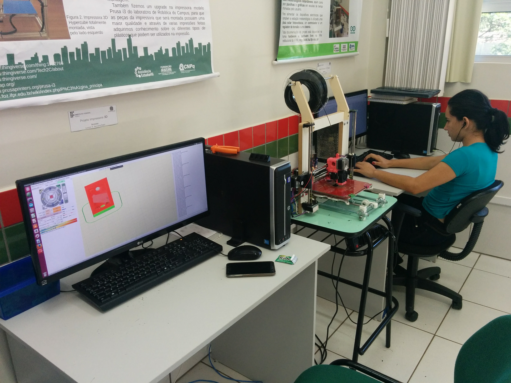

Laboratório Maker
Conheça o Laboratório Maker, do Campus Foz do Iguaçu, espaço multidisciplinar onde são desenvolvidos projetos de inovação tecnológica em diferentes áreas do conhecimento.
O laboratório conta com os seguintes equipamentos
- Computadores, notebook e dispositivos móveis
- Impressoras 3D
- Dispositivos programáveis (Arduinos, Orange Pi, Cubieboard, FPGA Odyssey),Instrumentos ferramentas e componentes para Eletrônica
- Pistas para robótica, Ferramentas e outros materiais.
Cursos

Técnico em Aquicultura
Aquicultura, é a ciência que estuda e desenvolve técnicas de cultivo, manejo e reprodução de organismos aquáticos, como peixes (Piscicultura); camarões(Carcinicultura); rãs (Ranicultura); moluscos: ostras e mexilhões (Malacocultura); algas e até tartarugas e jacarés.

Técnico em Edificações
O Técnico em Edificações é habilitado como um técnico da área da construção civil, tendo sua habilitação registrada junto ao CREA.

Técnico em Informática
O Técnico em Informática é um profissional com competências para manipular computadores e sistemas operacionais, desenvolver sistemas computacionais que auxiliem na rotina de trabalho das organizações; realizar manutenções em sistemas; conceber e implementar soluções de software baseadas em banco de dados.
IFPR - Instituto Federal do Parana - Todos os direitos reservados